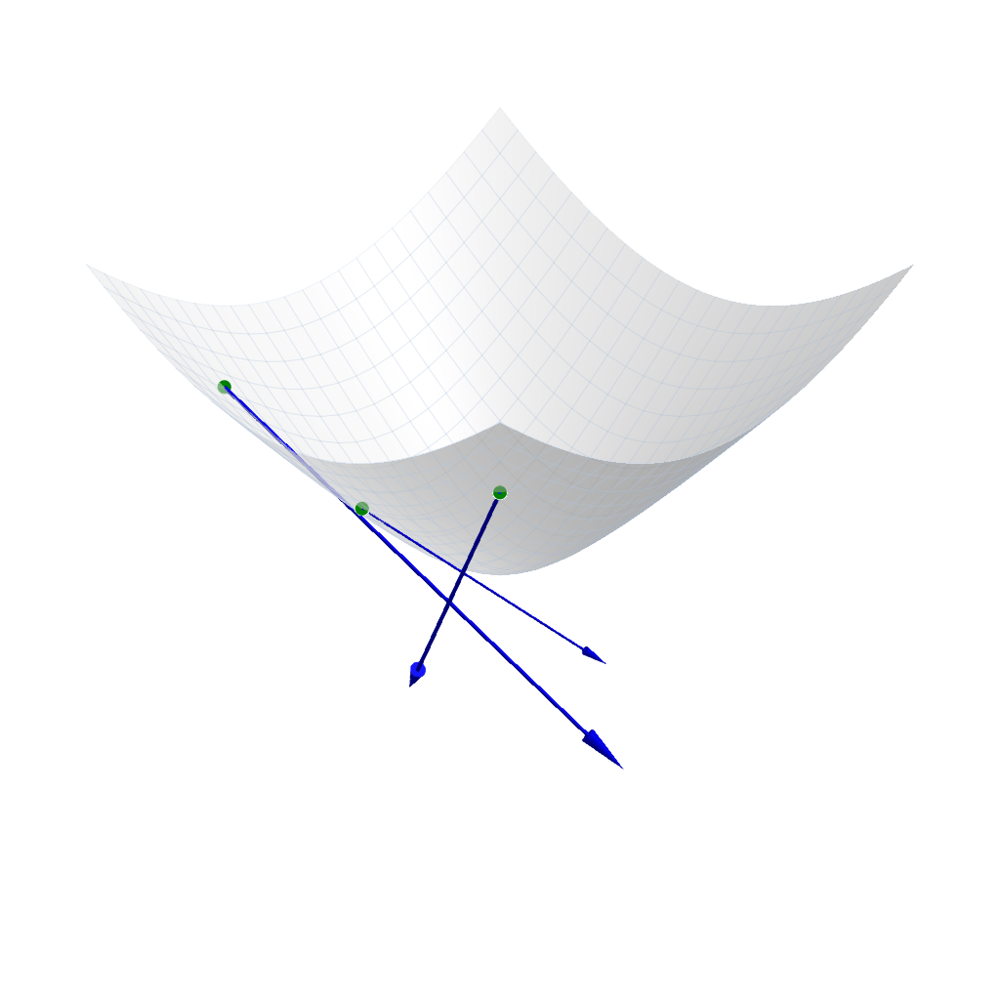
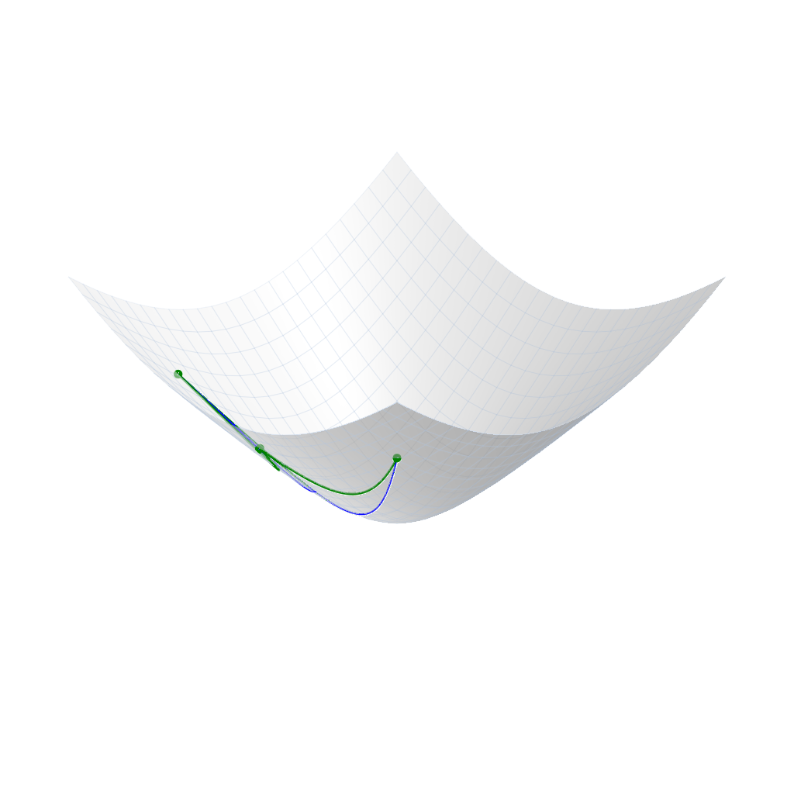
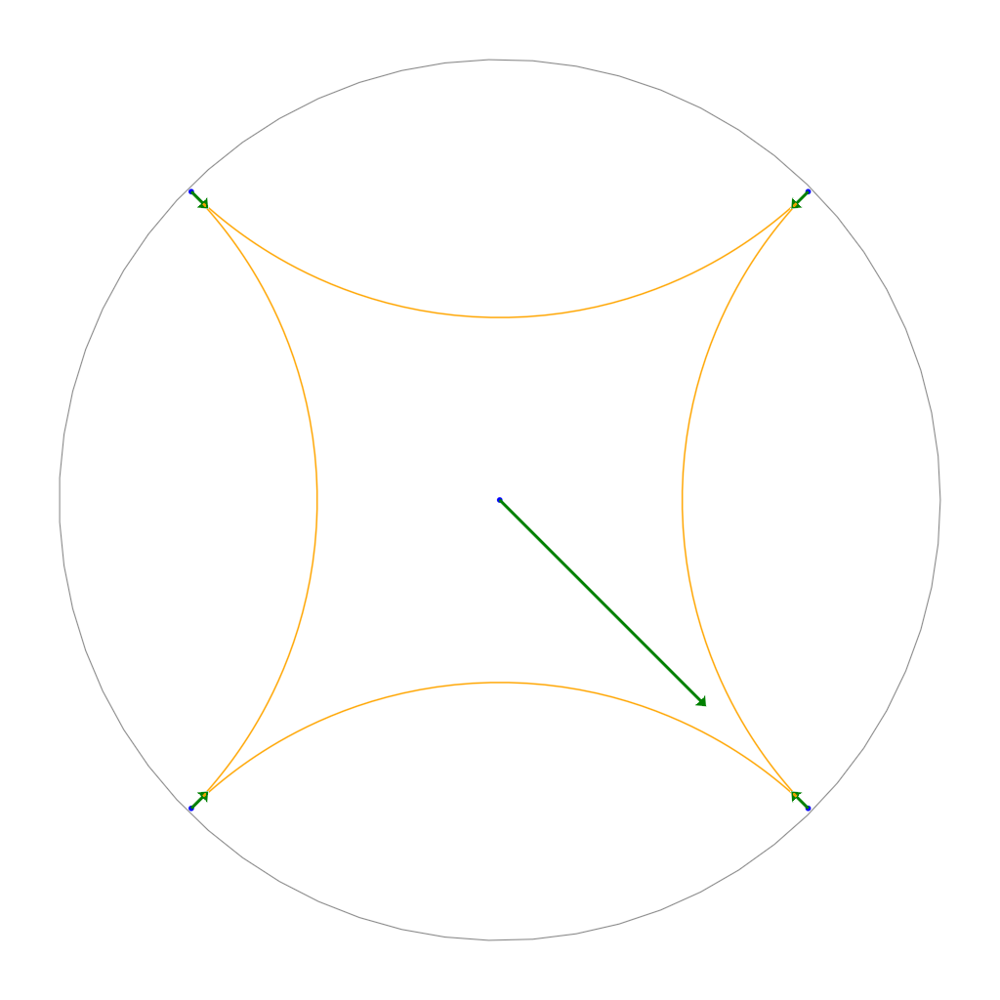
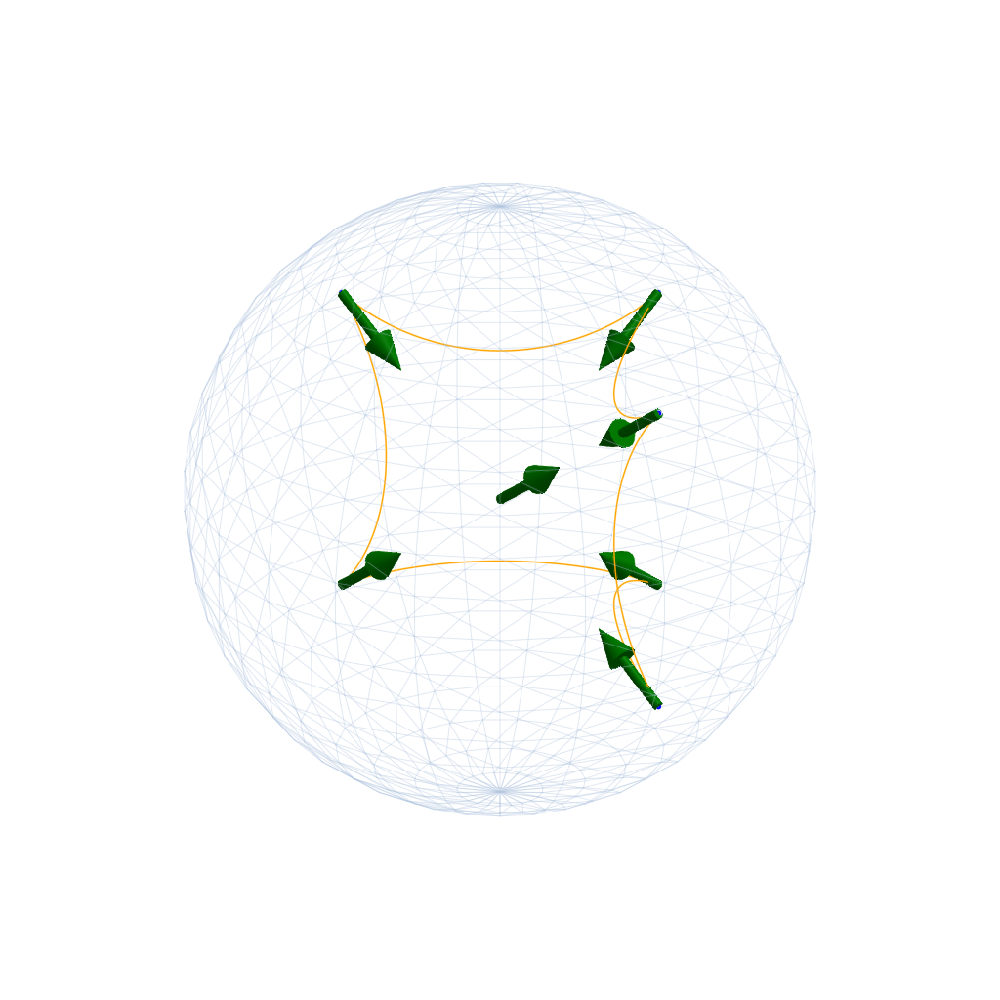
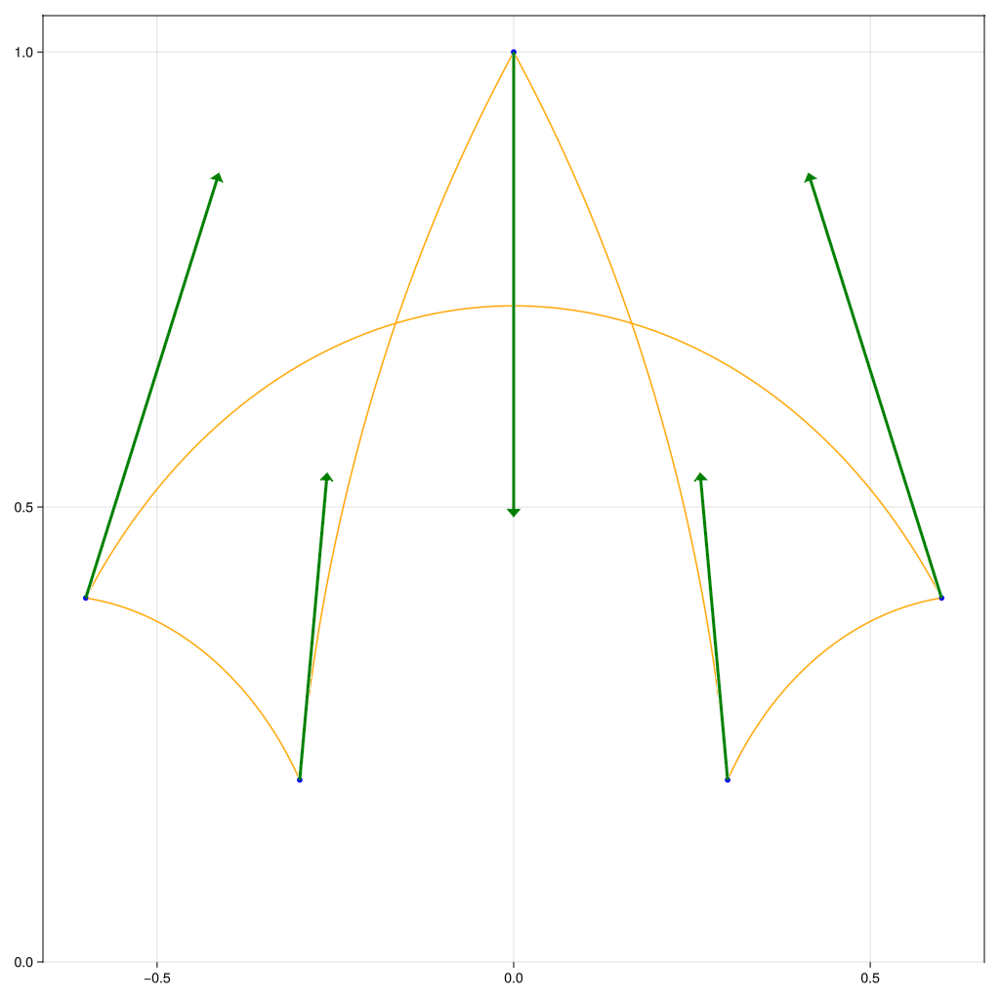
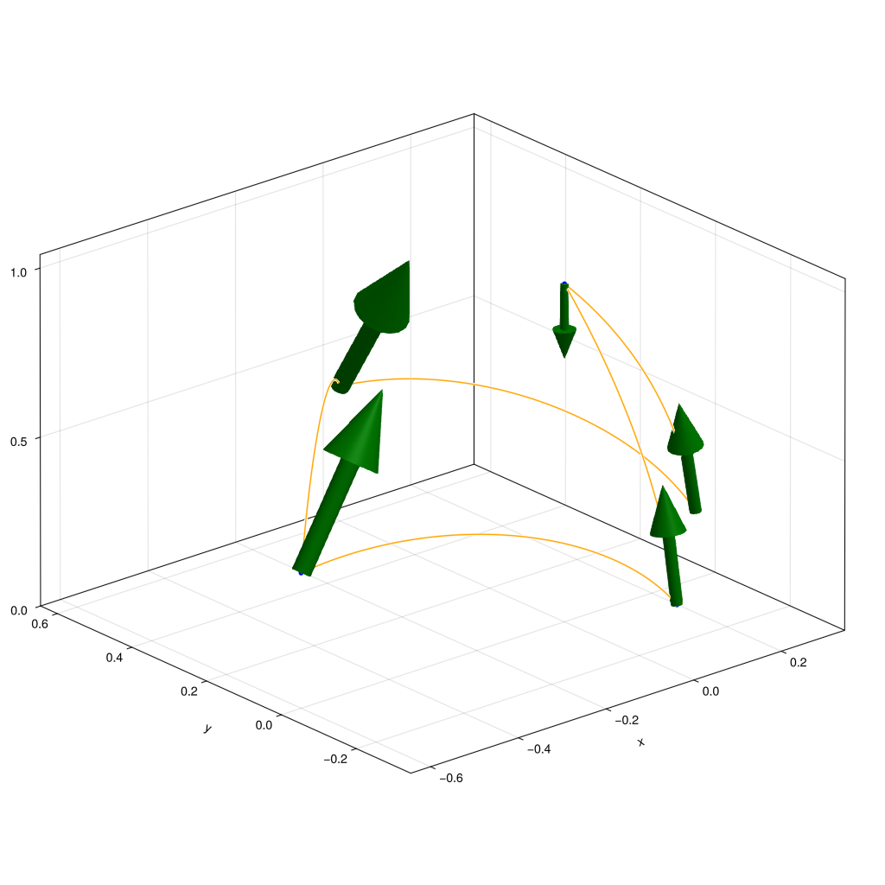

Plotting Hyperbolic data
The 2D Hyperboloid
For the hyperboloid model, points and tangent vectors are either represented by plain arrays or using the HyperboloidPoint and the HyperboloidTangentVector. Here we illustrate both: For a scatter plot, we use arrays first
using GLMakie, ManifoldMakie, Manifolds
M = Hyperbolic(2)
fig, ax, pl = hyperboloidplot(M)
p = [2.0, 0.0, sqrt(5)]
q = [2.0, 2.0, 3.0]
r = [2.0, -2.0, 3.0]
pts = [p, q, r]
vecs = [log(M, p, q), log(M, q, p), log(M, r, p)]
scatter!(ax, M, pts, markersize = 20, color=:green)
arrows3d!(
ax, M, pts, vecs; color = :blue,
minshaftlength = 0, shaftlength=.99, shaftradius = 0.004,
tipradius = 0.016, tiplength = 0.1,
)
fig
And for the (generic) plot of geodesics between points we illustrate this with the typed points
using GLMakie, ManifoldMakie, Manifolds
M = Hyperbolic(2)
fig, ax, pl = hyperboloidplot(M)
pts = HyperboloidPoint.([[2.0, 2.0, 3.0], [2.0, -2.0, 3.0], [1.5, 0.0, sqrt(3.25)]])
geodesics!(ax, M, pts; linewidth = 2, color = :blue)
pts = HyperboloidPoint.([[2.0, 2.0, 3.0], [2.0, -2.0, 3.0], [2.5, 0.0, sqrt(7.25)]])
scattergeodesics!(ax, M, pts; linewidth = 3, color = :green, markersize = 16, closed = true)
fig
The Poincaré disk and ball
For the Poincaré disc we can even plot 2D and 3D hyperbolic data.
2D Hyperbolic data on the Poincaré disc
using GLMakie, ManifoldMakie, Manifolds
M = Hyperbolic(2)
fig, ax, pl = poincareballplot(M; surfacealpha = 0.5, surfaceboundary = 1)
pts = PoincareBallPoint.([[0.0, 0.0], [0.7, -0.7], [0.7, 0.7], [-0.7, 0.7], [-0.7, -0.7]])
vecs = [
0.25 * log(M, pts[1], pts[2]), [log(M, p, pts[1]) for p in pts[2:end]]...,
]
scatter!(ax, M, pts; color = :blue, markersize = 8)
arrows2d!(ax, M, pts, vecs; color = :green)
geodesics!(ax, M, pts[2:end]; closed=true, color = :orange)
fig
3D Hyperbolic data and the Poincaré ball
using GLMakie, ManifoldMakie, Manifolds
M = Hyperbolic(3)
fig, ax, pl = poincareballplot(M; surfacealpha = 0.0, )
pts = PoincareBallPoint.([[0.0, 0.0, 0.0], [0.5, 0.5, 0.5], [-0.5, 0.5, 0.5], [-0.5, -0.5, 0.5], [-0.5, -0.5, -0.5], [-0.5, 0.5, -0.5], [0.5, 0.5, -0.5]])
vecs = [
0.25 .* log(M, pts[1], pts[2]), [log(M, p, pts[1]) for p in pts[2:end]]...
]
scatter!(ax, M, pts; color = :blue, markersize = 8)
arrows3d!(ax, M, pts, vecs; color = :green)
geodesics!(ax, M, pts[2:end]; closed=true, color = :orange)
ax.azimuth = 0
fig
The Poincaré Halfspace
2D Hyperbolic data on the Poincaré half plane
using GLMakie, ManifoldMakie, Manifolds
M = Hyperbolic(2)
fig, ax, pl = poincarehalfspaceplot(M)
pts = PoincareHalfSpacePoint.([[0.0, 1.0], [-0.3, 0.2], [-0.6, 0.4], [0.6, 0.4], [0.3, 0.2]])
vecs = [
log(M, pts[1], PoincareHalfSpacePoint([0.0, 0.6])), [log(M, p, pts[1]) for p in pts[2:end]]...,
]
scatter!(ax, M, pts; color = :blue, markersize = 8)
arrows2d!(ax, M, pts, vecs; color = :green)
geodesics!(ax, M, pts; closed=true, color = :orange)
fig
3D Hyperbolic data on the Poincaré half space
using GLMakie, ManifoldMakie, Manifolds
M = Hyperbolic(3)
fig, ax, pl = poincarehalfspaceplot(M)
pts = PoincareHalfSpacePoint.([[0.0, 0.0, 1.0], [0.0, -0.3, 0.2], [-0.6, 0.0, 0.4], [0.0, 0.6, 0.4], [0.3, 0.0, 0.2]])
vecs = [
log(M, pts[1], PoincareHalfSpacePoint([0.0, 0.0, 0.8])), [log(M, p, pts[1]) for p in pts[2:end]]...,
]
scatter!(ax, M, pts; color = :blue, markersize = 8)
arrows3d!(ax, M, pts, vecs; color = :green)
geodesics!(ax, M, pts; closed=true, color = :orange)
fig
Function reference
ManifoldMakie.hyperboloidplot — Function
hyperboloidplot(M::Hyperbolic{ManifoldsBase.TypeParameter{Tuple{2}}}; kwargs...)Draw the Hyperbolic(2) in the hyperboloid model as a (transparent) surface with an overlaid wireframe. This can be combined with
scatter(M, pts)to plot points thereonarrows3d(M, pts, vecs)to plot tangent vectorsgeodesics(M, pst)andscattergeodesics(M, pst)to draw geodesics
Example
fig, ax, p = hyperboloidplot(Hyperbolic(2))Plot type
The plot type alias for the hyperboloidplot function is HyperboloidPlot.
Attributes
clip_planes = @inherit clip_planes automatic — Clip planes offer a way to do clipping in 3D space. You can set a Vector of up to 8 Plane3f planes here, behind which plots will be clipped (i.e. become invisible). By default clip planes are inherited from the parent plot or scene. You can remove parent clip_planes by passing Plane3f[].
depth_shift = 0.0 — Adjusts the depth value of a plot after all other transformations, i.e. in clip space, where -1 <= depth <= 1. This only applies to GLMakie and WGLMakie and can be used to adjust render order (like a tunable overdraw).
fxaa = true — Adjusts whether the plot is rendered with fxaa (fast approximate anti-aliasing, GLMakie only). Note that some plots implement a better native anti-aliasing solution (scatter, text, lines). For them fxaa = true generally lowers quality. Plots that show smoothly interpolated data (e.g. image, surface) may also degrade in quality as fxaa = true can cause blurring.
inspectable = @inherit inspectable — Sets whether this plot should be seen by DataInspector. The default depends on the theme of the parent scene.
inspector_clear = automatic — Sets a callback function (inspector, plot) -> ... for cleaning up custom indicators in DataInspector.
inspector_hover = automatic — Sets a callback function (inspector, plot, index) -> ... which replaces the default show_data methods.
inspector_label = automatic — Sets a callback function (plot, index, position) -> string which replaces the default label generated by DataInspector.
model = automatic — Sets a model matrix for the plot. This overrides adjustments made with translate!, rotate! and scale!.
overdraw = false — Controls if the plot will draw over other plots. This specifically means ignoring depth checks in GL backends
refinement = 5 — refinement of points from wires to sampling the surface
space = :data — Sets the transformation space for box encompassing the plot. See Makie.spaces() for possible inputs.
ssao = false — Adjusts whether the plot is rendered with ssao (screen space ambient occlusion). Note that this only makes sense in 3D plots and is only applicable with fxaa = true.
surfacealpha = 0.5 — Surface alpha (0 = transparent, 1 = opaque).
surfacecolor = :white — Solid color of the surface.
transformation = :automatic — Controls the inheritance or directly sets the transformations of a plot. Transformations include the transform function and model matrix as generated by translate!(...), scale!(...) and rotate!(...). They can be set directly by passing a Transformation() object or inherited from the parent plot or scene. Inheritance options include:
:automatic: Inherit transformations if the parent and childspaceis compatible:inherit: Inherit transformations:inherit_model: Inherit only model transformations:inherit_transform_func: Inherit only the transform function:nothing: Inherit neither, fully disconnecting the child's transformations from the parent
Another option is to pass arguments to the transform!() function which then get applied to the plot. For example transformation = (:xz, 1.0) which rotates the xy plane to the xz plane and translates by 1.0. For this inheritance defaults to :automatic but can also be set through e.g. (:nothing, (:xz, 1.0)).
transparency = false — Adjusts how the plot deals with transparency. In GLMakie transparency = true results in using Order Independent Transparency.
visible = true — Controls whether the plot gets rendered or not.
wirecolor = (:lightsteelblue, 0.4) — Color of the wireframe lines drawn on top of the surface.
wires = 24 — Tessellation resolution (segments of the wireframe in every direction).
wirewidth = 0.5 — linewidth of the wire
xlims = [-3, 3] — range for the x-dimension for the surface
ylims = [-3, 3] — range for the y-dimension for the surface
ManifoldMakie.poincareballplot — Function
poincareballbplot(M::Hyperbolic{ManifoldsBase.TypeParameter{Tuple{2}}}; kwargs...)
poincareballbplot(M::Hyperbolic{ManifoldsBase.TypeParameter{Tuple{3}}}; kwargs...)Draw the Hyperbolic(n), n either 2 or 3, in the Poiuncaré disc model, which more generally is a ball for more than the 2D case. This can be combined with
scatter(M, pts)to plot points thereonarrows3d(M, pts, vecs)to plot tangent vectorsgeodesics(M, pst)andscattergeodesics(M, pst)to draw geodesics
Example
fig, ax, p = poincareballbplot(Hyperbolic(2))Plot type
The plot type alias for the poincareballplot function is PoincareBallPlot.
Attributes
clip_planes = @inherit clip_planes automatic — Clip planes offer a way to do clipping in 3D space. You can set a Vector of up to 8 Plane3f planes here, behind which plots will be clipped (i.e. become invisible). By default clip planes are inherited from the parent plot or scene. You can remove parent clip_planes by passing Plane3f[].
depth_shift = 0.0 — Adjusts the depth value of a plot after all other transformations, i.e. in clip space, where -1 <= depth <= 1. This only applies to GLMakie and WGLMakie and can be used to adjust render order (like a tunable overdraw).
fxaa = true — Adjusts whether the plot is rendered with fxaa (fast approximate anti-aliasing, GLMakie only). Note that some plots implement a better native anti-aliasing solution (scatter, text, lines). For them fxaa = true generally lowers quality. Plots that show smoothly interpolated data (e.g. image, surface) may also degrade in quality as fxaa = true can cause blurring.
inspectable = @inherit inspectable — Sets whether this plot should be seen by DataInspector. The default depends on the theme of the parent scene.
inspector_clear = automatic — Sets a callback function (inspector, plot) -> ... for cleaning up custom indicators in DataInspector.
inspector_hover = automatic — Sets a callback function (inspector, plot, index) -> ... which replaces the default show_data methods.
inspector_label = automatic — Sets a callback function (plot, index, position) -> string which replaces the default label generated by DataInspector.
model = automatic — Sets a model matrix for the plot. This overrides adjustments made with translate!, rotate! and scale!.
overdraw = false — Controls if the plot will draw over other plots. This specifically means ignoring depth checks in GL backends
space = :data — Sets the transformation space for box encompassing the plot. See Makie.spaces() for possible inputs.
ssao = false — Adjusts whether the plot is rendered with ssao (screen space ambient occlusion). Note that this only makes sense in 3D plots and is only applicable with fxaa = true.
surfacealpha = 0.2 — Surface alpha (0 = transparent, 1 = opaque).
surfaceboundary = 2 — thickness of the boundary surface (only 2D)
surfacecolor = :black — Solid color of the surface (3D) or boundary (2D)
transformation = :automatic — Controls the inheritance or directly sets the transformations of a plot. Transformations include the transform function and model matrix as generated by translate!(...), scale!(...) and rotate!(...). They can be set directly by passing a Transformation() object or inherited from the parent plot or scene. Inheritance options include:
:automatic: Inherit transformations if the parent and childspaceis compatible:inherit: Inherit transformations:inherit_model: Inherit only model transformations:inherit_transform_func: Inherit only the transform function:nothing: Inherit neither, fully disconnecting the child's transformations from the parent
Another option is to pass arguments to the transform!() function which then get applied to the plot. For example transformation = (:xz, 1.0) which rotates the xy plane to the xz plane and translates by 1.0. For this inheritance defaults to :automatic but can also be set through e.g. (:nothing, (:xz, 1.0)).
transparency = false — Adjusts how the plot deals with transparency. In GLMakie transparency = true results in using Order Independent Transparency.
visible = true — Controls whether the plot gets rendered or not.
wirecolor = (:lightsteelblue, 0.4) — Color of the wireframe lines drawn on top of the surface (only 3D).
wires = 24 — Tessellation resolution (segments of the wireframe in every direction, only 3D).
wirewidth = 0.5 — linewidth of the wire (only 3D case)
ManifoldMakie.poincarehalfspaceplot — Function
poincarehalfspaceplot(M::Hyperbolic{ManifoldsBase.TypeParameter{Tuple{2}}}; kwargs...)
poincarehalfspaceplot(M::Hyperbolic{ManifoldsBase.TypeParameter{Tuple{3}}}; kwargs...)Draw the Hyperbolic(n), n either 2 or 3, in the Poiuncaré half plane model, which more generally is a half space for more than the 2D case. This can be combined with
scatter(M, pts)to plot points thereonarrows3d(M, pts, vecs)to plot tangent vectorsgeodesics(M, pst)andscattergeodesics(M, pst)to draw geodesics
Example
fig, ax, p = poincarehalfspaceplot(Hyperbolic(2))Plot type
The plot type alias for the poincarehalfspaceplot function is PoincareHalfSpacePlot.
Attributes
clip_planes = @inherit clip_planes automatic — Clip planes offer a way to do clipping in 3D space. You can set a Vector of up to 8 Plane3f planes here, behind which plots will be clipped (i.e. become invisible). By default clip planes are inherited from the parent plot or scene. You can remove parent clip_planes by passing Plane3f[].
depth_shift = 0.0 — Adjusts the depth value of a plot after all other transformations, i.e. in clip space, where -1 <= depth <= 1. This only applies to GLMakie and WGLMakie and can be used to adjust render order (like a tunable overdraw).
fxaa = true — Adjusts whether the plot is rendered with fxaa (fast approximate anti-aliasing, GLMakie only). Note that some plots implement a better native anti-aliasing solution (scatter, text, lines). For them fxaa = true generally lowers quality. Plots that show smoothly interpolated data (e.g. image, surface) may also degrade in quality as fxaa = true can cause blurring.
inspectable = @inherit inspectable — Sets whether this plot should be seen by DataInspector. The default depends on the theme of the parent scene.
inspector_clear = automatic — Sets a callback function (inspector, plot) -> ... for cleaning up custom indicators in DataInspector.
inspector_hover = automatic — Sets a callback function (inspector, plot, index) -> ... which replaces the default show_data methods.
inspector_label = automatic — Sets a callback function (plot, index, position) -> string which replaces the default label generated by DataInspector.
model = automatic — Sets a model matrix for the plot. This overrides adjustments made with translate!, rotate! and scale!.
overdraw = false — Controls if the plot will draw over other plots. This specifically means ignoring depth checks in GL backends
space = :data — Sets the transformation space for box encompassing the plot. See Makie.spaces() for possible inputs.
ssao = false — Adjusts whether the plot is rendered with ssao (screen space ambient occlusion). Note that this only makes sense in 3D plots and is only applicable with fxaa = true.
transformation = :automatic — Controls the inheritance or directly sets the transformations of a plot. Transformations include the transform function and model matrix as generated by translate!(...), scale!(...) and rotate!(...). They can be set directly by passing a Transformation() object or inherited from the parent plot or scene. Inheritance options include:
:automatic: Inherit transformations if the parent and childspaceis compatible:inherit: Inherit transformations:inherit_model: Inherit only model transformations:inherit_transform_func: Inherit only the transform function:nothing: Inherit neither, fully disconnecting the child's transformations from the parent
Another option is to pass arguments to the transform!() function which then get applied to the plot. For example transformation = (:xz, 1.0) which rotates the xy plane to the xz plane and translates by 1.0. For this inheritance defaults to :automatic but can also be set through e.g. (:nothing, (:xz, 1.0)).
transparency = false — Adjusts how the plot deals with transparency. In GLMakie transparency = true results in using Order Independent Transparency.
visible = true — Controls whether the plot gets rendered or not.